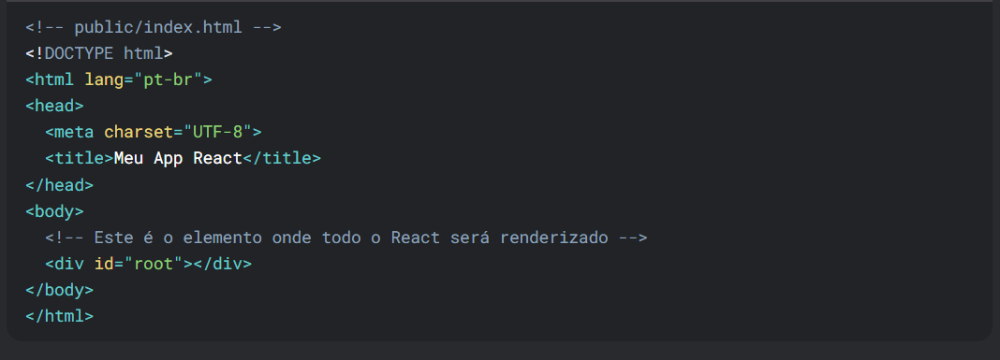
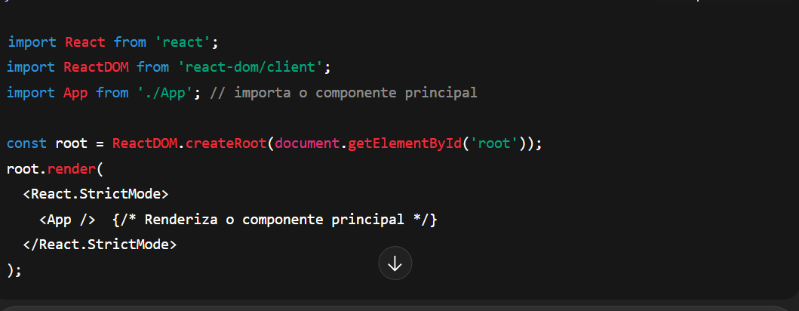
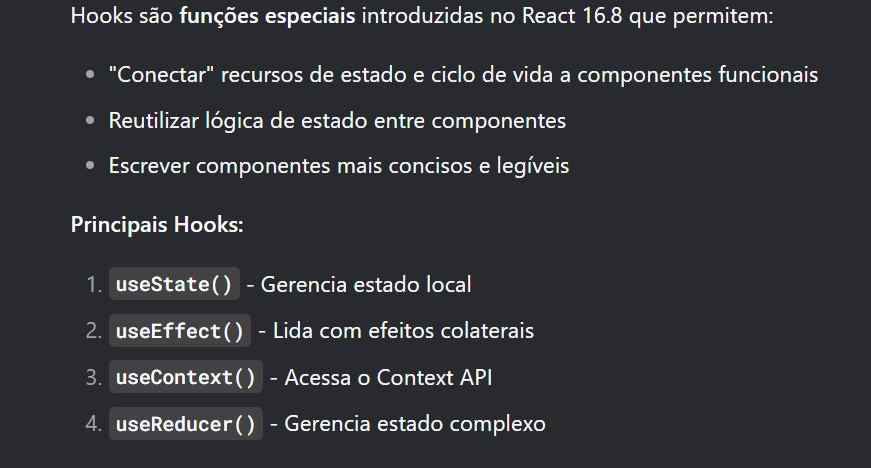
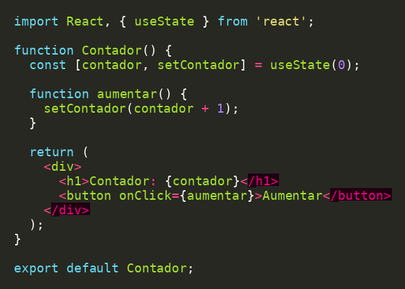

Aprenda os conceitos fundamentais do React
ReactJS é a biblioteca JavaScript mais popular para construção de interfaces de usuário modernas. Desenvolvida pelo Facebook, ela revolucionou a forma como criamos aplicações web ao introduzir componentes reutilizáveis e um modelo de programação declarativo.
todo aplicativo React começa com um arquivo HTML simples que serve como contêiner:
JSX é uma extensão de sintaxe que permite escrever HTML dentro do JavaScript.
É transformado em chamadas React.createElement() durante a compilação.
Hooks são funções especiais do React que permitem usar funcionalidades como estado, efeitos colaterais, referências.
🧠 O que é state (estado) no React?
um objeto JavaScript que armazena dados que podem mudar durante o ciclo de vida de um componente.Ou seja, informações que mudan durante a execução da aplicação.
Exemplo de useState em React:
Toda vez que o estado muda com setContador, o React re-renderiza o componente com o novo valor.
React Router é uma biblioteca de roteamento usada com ReactJS para criar SPAs (Single-PageApplications), onde você pode navegar entre "páginas" sem recarregar o site. Em vez de ir para outra página HTML, o React troca componentes com base na URL atual.